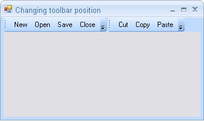
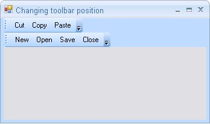

We can change the position of toolbars at runtime using RowIndex and RowOffset properties of MainFrameBarManager as follows.
|
[C#]
this.mainFrameBarManager1.GetBarControl(this.bar1).RowIndex = 1; this.mainFrameBarManager1.GetBarControl(this.bar2).RowIndex = 0;
this.mainFrameBarManager1.GetBarControl(bar2).RowOffset = 0; this.mainFrameBarManager1.GetBarControl(bar1).RowOffset = 1; this.mainFrameBarManager1.GetCommandBarManager().RecalcLayout(); |
|
[VB.NET]
Me.mainFrameBarManager1.GetBarControl(Me.bar1).RowIndex = 1 Me.mainFrameBarManager1.GetBarControl(Me.bar2).RowIndex = 0
Me.mainFrameBarManager1.GetBarControl(bar2).RowOffset = 0 Me.mainFrameBarManager1.GetBarControl(bar1).RowOffset = 0 Me.mainFrameBarManager1.GetCommandBarManager().RecalcLayout() |

Figure 848: Toolbar placed in the First Row
The position of toolbar1 is moved to second row as follows.

Figure 849: Toolbar moved to the Second Row